AI Academy · Level 3 · Grade 8 · Week 9 · Student lesson
Prompt Evaluation
Learn to understand, design, build, test and explain AI systems responsibly.
Project: Verified Study Buddy
Before you start
AI-2 Week 28: compare prompts on the same inputs and criteria.
Plan time to read, investigate and explain. Keep predictions separate from observations.
Student lesson · 1 of 18
Your mission
Start with the target: Explain the mechanism and terminology of controlled prompt experiments. Try the recall before opening notes.
Your learning target
I can explain the mechanism and terminology of controlled prompt experiments.
I can apply the stated procedure to a new case with a traceable result.
I can identify an assumption or limitation and design a revealing follow-up.
Remember before reading
Close your notes first. A rough first answer helps us choose the right starting point; it is not a score for your ability.
Without opening the old lesson, explain one key idea from Structured Output and Schemas. Give an example and a mistake that the idea helps you avoid.
Without opening the old lesson, explain one key idea from Examples and Rubrics. Give an example and a mistake that the idea helps you avoid.
Without opening the old lesson, explain one key idea from Tokens and Context. Give an example and a mistake that the idea helps you avoid.
After trying, check the relevant lesson or ask your teacher. Change the part of your explanation that the evidence shows was wrong.
Week 9: Prompt Evaluation
Prompt claims require a fixed test set and repeatable scoring.
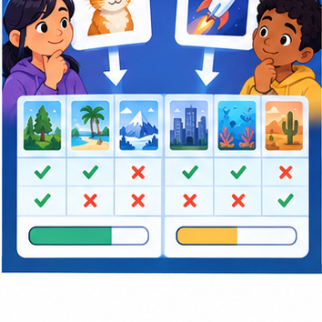
CREATOR MISSION
A/B test two prompts across six cases.
Creator name and date:
Readiness for the connected explanation
Recall Structured outputs and validation. Explain why a recorded result needs its input conditions and evidence source before it can support a claim.
This week’s end goal
By the end, I can evaluate prompts with paired cases and a predeclared mandatory criterion.
Student lesson · 2 of 18
Notice the evidence
Investigate the supplied Prompt Evaluation case. Separate observations, given facts and assumptions before choosing an explanation.
PICTURE STORY
Notice → Predict → Explain
Begin with visible evidence. Do not explain more than the picture and information support.
Start with this puzzle
MYSTERY
The learners must use prompt evaluation to solve a problem. What information do they have? What decision or calculation do they make? What would count as evidence that it worked?
Three observations (what you can point to):
My prediction and the clue supporting it:
A closer explanation
A prompt experiment compares complete specifications using the same task cases. Define success before inspecting outputs; change one intended instruction and preserve other settings.
Begin by writing the question the procedure is intended to answer. Identify the information already supplied, the information it will produce and the information still missing.
These are constructed classroom examples; they do not require live accounts, private records or an external service. Do not treat a plausible explanation as a measured outcome.
Student lesson · 3 of 18
See how it works
Follow the mechanism for Prompt Evaluation. Connect each labelled input, deciding step and result.
VISUAL MECHANISM
Input → Process → Output
Trace the information. At each stage, ask what changed and how you could test it.
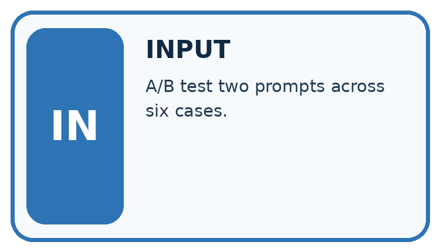
↓
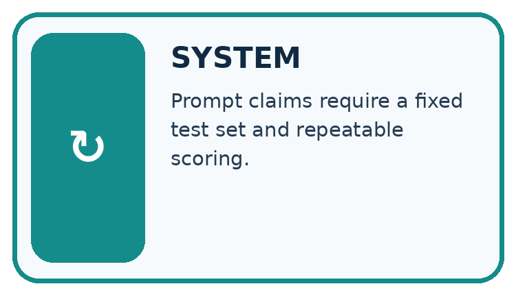
↓
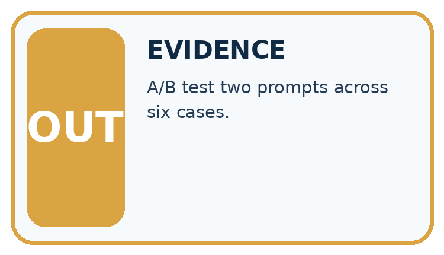
Which stage could fail even when the other two are correct? Explain:
A closer explanation
Evaluate both prompts on paired cases with fixed model/version, source records, output contract and scoring rubric. Use development results for selection, then reserve new final cases.
Score each case rather than counting attractive sentences.
Controlled prompt experiments — evidence trace
Before applying the procedure, write its units, denominator or decision boundary where relevant. A partner should be able to repeat each step using the same inputs.
If a required input is absent or violates the stated contract, record that condition explicitly instead of quietly replacing it with a convenient value.
Connect the picture and the explanation
Point to the input, the deciding step and the result in this week’s visual. Explain the same step in ordinary words. A picture helps when you can say what each part represents.
Student lesson · 4 of 18
Compare the cases
Compare the supplied cases for Prompt Evaluation. Identify the detail that changes the conclusion.
The case to investigate
CASE GALLERY
Four Tests, Four Kinds of Evidence
A system is not understood until it survives more than one comfortable example.


The normal case
NORMAL CASE: predict and name evidence. BOUNDARY CASE: predict and name evidence.


Check missing information
MISSING INFORMATION: predict and name evidence. TRANSFER CASE: predict and name evidence.
Which case is most likely to reveal a hidden assumption? Why?
Change one thing in the pictured case
Change one thing
Change: Remove the gate and retain total passes as the only criterion.
Predicted result
Prediction: The record is a tie; another predeclared tie policy or further development evidence is needed.
Why the result follows
Reason: Both prompts have four passes on six questions.
Student lesson · 5 of 18
Words that unlock the idea
Use the vocabulary of Prompt Evaluation to explain a concrete decision, rather than only memorising definitions.
VOCABULARY LAB
Words You Can Use to Reason
A definition matters when you can recognize the idea, use it, and contrast it with a near-miss.
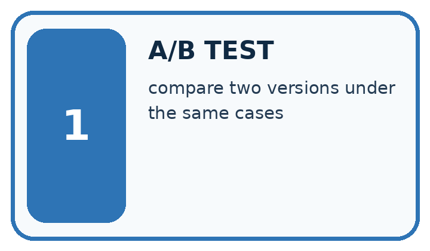
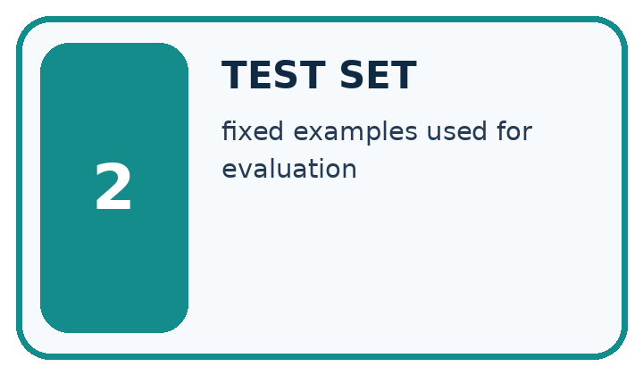
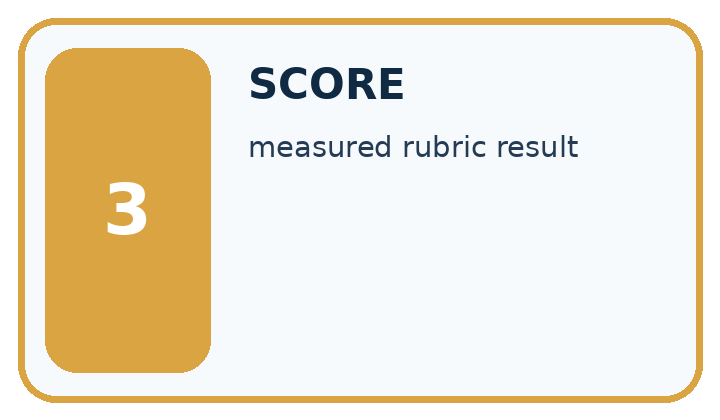
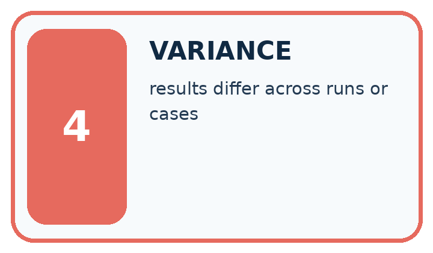
| Word | My own example | Not this / boundary |
|---|---|---|
| A/B test | A comparison of two versions using a planned assignment of comparable cases and the same outcome measure. | |
| test set | Data reserved for evaluating a selected system; final test data must not influence its development. | |
| score | A numerical value assigned using a specified rule; it is not automatically a probability. | |
| variance | A measure of spread around a mean; informally, variation across repeated results. Specify which meaning is intended. |
Words used in the closer explanation
| Word | Meaning |
|---|---|
| Paired case | The same case evaluated under each compared procedure |
| Rubric | Prespecified criteria for judging an output |
| Regression | A previously passing condition that fails after a change |
Student lesson · 6 of 18
Follow a worked example
Follow the worked trace for Prompt Evaluation, predict a step, then compare with its explanation.
WORKED EVIDENCE
Reason Step by Step
Predict first. Then check each step. A correct answer without visible reasoning is incomplete evidence.
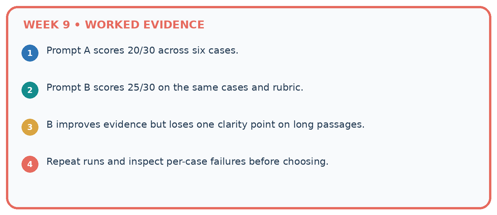
1. Prompt A scores 20/30 across six cases.
2. Prompt B scores 25/30 on the same cases and rubric.
3. B improves evidence but loses one clarity point on long passages.
4. Repeat runs and inspect per-case failures before choosing.
Recalculate, retrace, or restate the reasoning in your own representation:
CHECK Did the evidence answer the exact question? Did the total, path, or source record stay consistent?
A closer explanation
On six development cases P passes cases 1, 2, 3, 4; Q passes 1, 2, 3, 5, 6. Missing-approval cases are 4 and 6. Compare totals and condition results.
P passes 4/6 and Q 5/6. P passes one of two missing-approval cases, Q also one of two. Q improves the aggregate while leaving this condition unchanged.
Worked explanation · Prompt Evaluation
Compare the intermediate evidence with the final statement. Explain why each number or decision follows from the stated inputs.
The conclusion belongs to this scenario and procedure; changing the inputs, evaluation population or authority can change what it establishes. Retain the raw record so a later revision can be compared honestly.
Learn from the worked case
Cover the result before checking it. Say what is given, choose the procedure, and follow one step at a time. Then uncover the result and explain your first mismatch. Ask why a step is allowed, not only what number it produces.
A pictorial worked case: Prompt Evaluation
A fictional Study Buddy compares two prompts across six development questions.
The facts we will use
Supplied facts
A passes cases 1,2,3,4. B passes 1,2,5,6. Cases 5 and 6 require refusing unsupported claims.
Supplied facts
Mandatory selection gate: pass both refusal cases. All cases use fixed sources and one common rubric.
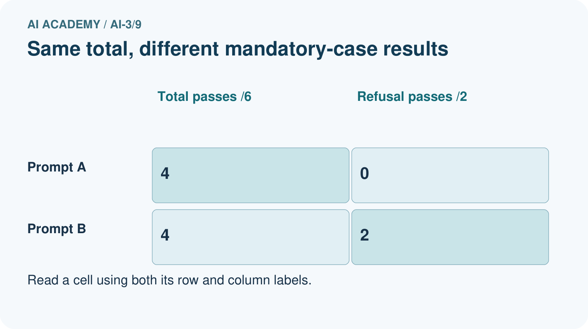
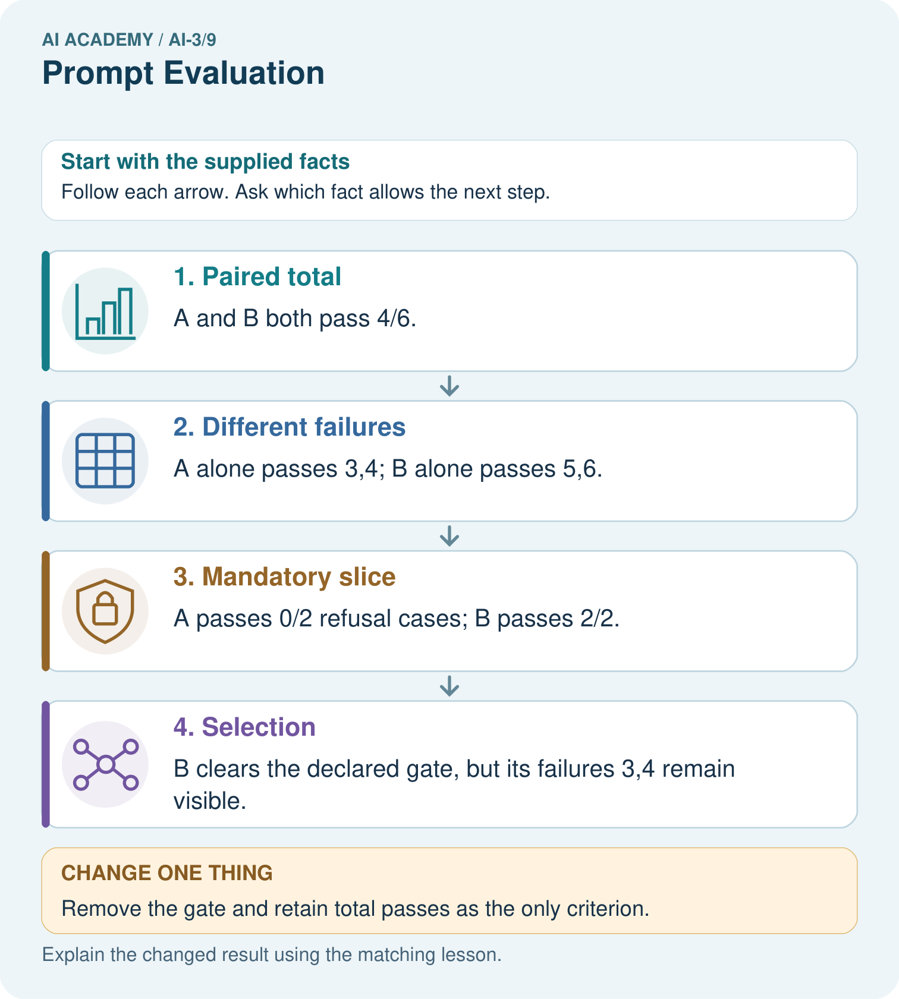
Read the picture one step at a time
Why this result follows
Why the result follows
Equal totals do not imply equal behavior. The predeclared gate expresses an important requirement instead of choosing a criterion after seeing the result.
Selecting B is justified under that rule, not by claiming it is best on every question. After development, freeze the chosen prompt and test new questions, including both ordinary and unsupported cases.
What this example does not establish
Keep the stated limit
Six invented development outcomes do not measure real model performance or prove a gain in student understanding.
Keep the stated limit
Read the labelled picture: Why is B’s selection defensible here without calling it universally superior?
Keep the stated limit
Change one thing: Remove the gate and retain total passes as the only criterion. Predict the result before checking the explanation. What remains the same?
Student lesson · 7 of 18
Find and repair a mistake
Find the unsupported step in the Prompt Evaluation claim and explain a repair using the supplied evidence.
Find the first error
ERROR DETECTIVE
Compare → Diagnose → Repair
Do not patch the answer. Find the earliest unsupported assumption, wrong step, or weak evidence.
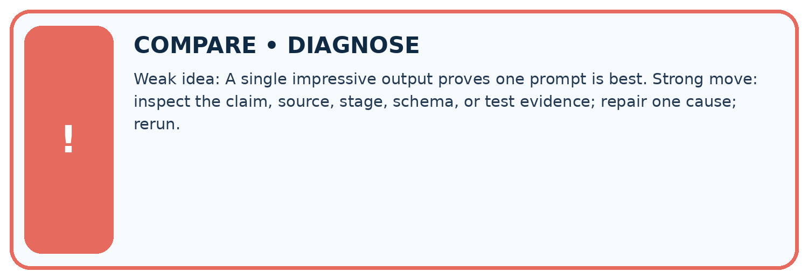
| Evidence record | Expected | Actual | Likely cause / next test |
|---|---|---|---|
| normal case | works | ||
| boundary case | stated rule | ||
| missing input | safe response | ||
| fresh transfer | generalizes |
Repair one cause. Why is this repair better than changing several things?
A closer explanation
Check the claim against the facts
Complete the supported workbook tasks before attempting W4 independently. Record any hints or help used. After feedback, use the teacher's fresh retry rather than copying the earlier answer.
For a project, select a relevant new case, predict the outcome from the declared rule and preserve the result alongside any revision.
Student lesson · 8 of 18
Practise together
Practise Prompt Evaluation with support, then explain the deciding step in your own words.
LOGIC STUDIO
Specify Before You Run
Prompts, schemas, retrieval, tool calls, and code are inspectable parts of one AI product.

SET task, audience, constraints, output_schema LOAD approved_context or retrieval_result CALL model or allowed_tool VALIDATE fields, claims, citations, and safety IF evidence missing: ask, retrieve, or abstain RETURN useful output + source trail + limitations
Trace one input. Which line changes the state or chooses a path?
A closer explanation
Prompt selection on development cases cannot be reported as independent final performance.
A useful check asks what would make the reasoning fail. Distinguish a failure to execute the declared procedure from a weakness in the procedure itself.
The first may require a correction; the second requires an explicitly revised method and new evidence. Preserve unsuccessful cases so an improved result cannot hide the original problem.
Practise with less help: Trace the worked case
Use workbook W2 for the connected example “Controlled prompt experiments”. First fill the input and rule boxes. Try the middle steps before asking for a hint. After a hint, try the next step yourself.
| Plan | Do | Check |
|---|---|---|
| What is given? Which rule or procedure applies? | Record each intermediate step. | Does the result follow? What remains unknown? |
Explain your trace to a partner. Your partner points to one step to check. Swap roles on the next case. Each person writes their own explanation.
Check your reasoning
Use the worked case for Controlled prompt experiments. Proposed explanation: “The worked result establishes every future case”. Decide whether this explanation is supported.
Point to the step or supplied fact that decides; explain your repair if needed.
Answer on your own before discussion. If you are unsure, say which step you need help with.
Explain the picture
Why is B’s selection defensible here without calling it universally superior?
This is supported practice. Keep the separately named independent case for an attempt before feedback.
Student lesson · 9 of 18
Run the investigation
Investigate Prompt Evaluation. Record the prediction, actual observation or labelled paper trace, explanation and next test separately.
EVIDENCE LAB
Predict → Test → Record → Explain
Keep expected and actual results separate. Surprises are useful data when recorded honestly.
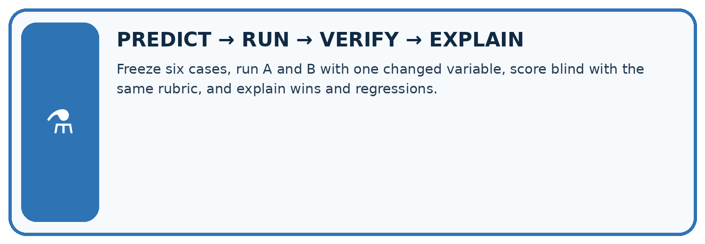
Freeze six cases, run A and B with one changed variable, score blind with the same rubric, and explain wins and regressions.
| Test / input | Prediction | Actual | Evidence / calculation | Change or keep? |
|---|---|---|---|---|
| normal | ||||
| boundary | ||||
| missing | ||||
| fresh transfer |
What did the hardest test teach you that the normal test did not?
Plan → try → check
Before trying: what do I expect, and why? While trying: which step could first go wrong? Afterwards: what did I actually observe, and what should change? Keep “not run” if you only traced the procedure.
Student lesson · 10 of 18
Build your understanding
Move from recall to tracing, diagnosis and transfer in Prompt Evaluation. Explain why each step is justified.
MASTERY
From Knowing the Word to Owning the Idea
Move upward only when you can produce evidence without copying the worked example.

1 • NAME: Define the concept without repeating the textbook.
2 • TRACE: Show the information, state, branch, calculation, or evidence path.
3 • APPLY: Solve a different example independently.
4 • CHALLENGE: Find a boundary case, counterexample, or unfair outcome.
5 • EXPLAIN LIMITS: Say when the result should not be trusted or used alone.
My strongest evidence of independent understanding:
Student lesson · 11 of 18
Connect your project
Apply this week’s idea to Verified Study Buddy. Keep an annotated decision and the evidence supporting it.
CUMULATIVE PROJECT
Verified Study Buddy
Every week adds one inspectable piece. The system must show how it reached a result.
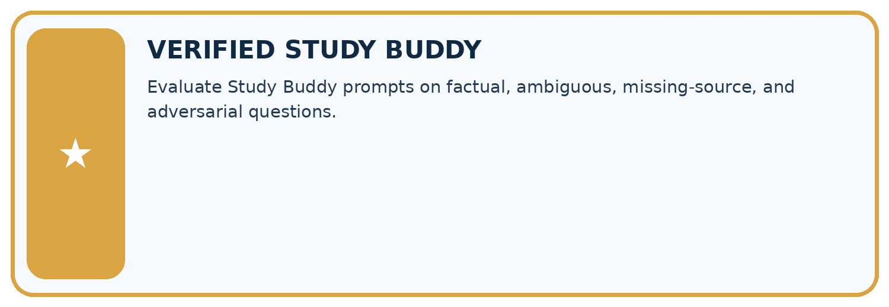
THIS WEEK’S CHECKPOINT Evaluate Study Buddy prompts on factual, ambiguous, missing-source, and adversarial questions.
Trace the system
SYSTEM MAP Learner need → prompt/schema → approved sources/retrieval → model/tool → structured answer → verification → human decision
What will you add, change, or verify in the project this week?
What should remain under human control?
Responsible design
RESPONSIBLE DESIGN Collect only necessary information. Show uncertainty and limits. Never confuse fluent output with verified truth.
Evidence for your project
Use Study Buddy case matrices with explicit priorities, source support gates and fresh final questions.
Student lesson · 12 of 18
Show what you know
Use a genuinely new case for independent evidence. Previously discussed examples remain practice; use the separately named independent case before feedback.
Independent evidence
INDEPENDENT MASTERY PROOF
Explain • Transfer • Test • Defend
Complete this page without copying the worked example. Your reasoning matters more than decoration.
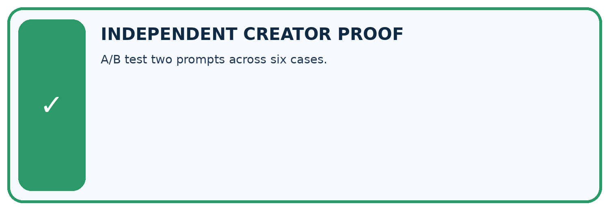
Try a more demanding case
CHALLENGE A/B test two prompts across six cases.
1. My fresh example, trace, calculation, or design:
2. My evidence that it works (include a boundary or missing-data case):
3. One limitation, fairness concern, or situation needing human review:
Check your explanation
SELF-CHECK □ I explained the mechanism □ I used evidence □ I tested a fresh case □ I named a limitation □ I can answer ‘why?’
Student lesson · 13 of 18
Study a complete case
Revisit the complete Prompt Evaluation case for supported practice. Repeated examples do not become fresh assessments.
Week 9 Worked case
Use the supplied details to practise the weekly concept before attempting the independent question. This case extends the illustrated lesson.
The situation
On five fixed questions, A passes four and B passes three; B looks more attractive.
The question
What conclusion is supported?
Worked explanation
A has 4/5 versus B's 3/5 on this set. Appearance is separate. Broaden cases and repeat stochastic trials before generalising.
Explain it in your own words
Which detail supports the answer, and why does it matter?
Trace the supplied case visually
Evaluate prompts on the same questions
| Evidence or stage | Value or result |
|---|---|
| Prompt A | 4/5 |
| Prompt B | 3/5 |
On five fixed questions, A passes four and B passes three; B looks more attractive.
What conclusion is supported?
A has 4/5 versus B's 3/5 on this set. Appearance is separate. Broaden cases and repeat stochastic trials before generalising.
Student lesson · 14 of 18
Try a new case independently
Attempt the reserved new case before feedback. Record support; the earlier examples below remain additional practice.
Independent case: Changed independent case
Five validation tasks have pass results A:1,1,1,0,0 and B:0,1,0,1,1. Compare performance and explain what is required before choosing a prompt.
Attempt this case before feedback. Record any help. Earlier examples below are further practice; a case already practised with feedback cannot establish fresh transfer.
Week 9 Independent application
Close the worked explanation. Apply the idea to this different question without copying.
Prompt A passes 8 of 10 tasks; B passes 9 of 10 but fails the only source-checking task. A source check is mandatory. Which can be accepted as-is?
My answer, with a trace, calculation or supporting evidence
Create and test
Change one relevant detail. Predict the result before testing. Include a boundary or missing-information case when it helps reveal a limit.
My changed input and expected result
Connect to your project
Evaluate Study Buddy prompts on factual, ambiguous, missing-source, and adversarial questions.
The evidence I will keep
Your teacher has the independent answer and scoring criteria. Complete the matching workbook week to keep your practice evidence together.
Transfer practice from the original programme
On four shared tasks, A scores 1,1,0,1 and B scores 1,0,1,1. Their totals tie. What should you inspect before choosing? Define a final evaluation step.
Use feedback to improve
Attempt the independent case before hints. Record whether you worked alone, used a hint or followed a model. After feedback, fix the first unsupported step and explain why it changed.
A later check uses a changed case, not a copied answer.
Student lesson · 15 of 18
Your lesson route
Use this map to navigate Prompt Evaluation, connect the goals to tasks and keep one evidence record for each attempt.
Start with this question: A fictional Study Buddy compares two prompts across six development questions.
| By the end, I can | How I will show it |
|---|---|
| Explain the mechanism and terminology of controlled prompt experiments | Explain the deciding step, show a trace or test, and state one limit. |
| Apply the stated procedure to a new case with a traceable result | Explain the deciding step, show a trace or test, and state one limit. |
| Identify an assumption or limitation and design a revealing follow-up | Explain the deciding step, show a trace or test, and state one limit. |
Remember → watch and explain → try with help → investigate → try independently → keep project evidence. Your teacher may spread this lesson across several classes.
Keep your first prediction. Compare it with what the evidence shows and explain any change.
Student lesson · 16 of 18
Finish and return
Explain Prompt Evaluation without notes, identify a remaining question and plan a later check with a changed case.
Close your notes. Explain this goal in your own words: Explain the mechanism and terminology of controlled prompt experiments
If you are unsure, return to the worked picture and explain one arrow. If you are ready, change an input or assumption and justify your prediction.
Save your workbook evidence. At the next review, try a different case before opening your old answer.
Student lesson · 17 of 18
Supported practice, repair and portfolio
Attempt supported questions before using hints or feedback. Review a missing building block, then keep the completed work.
Use this supported practice once, in the browser or on paper. Keep the reserved independent assessment for a separate first attempt before teacher feedback.
A fictional Study Buddy compares two prompts across six development questions.
Practice 1: explain the deciding evidence
Which labelled step matches this detail? B clears the declared gate, but its failures 3,4 remain visible.
1. Different failures
2. Paired total
3. Mandatory slice
4. Selection
Hint · try first
Hint if needed: Read the steps in the pictorial case. Match the supplied detail to the stage that performs or records it.
Feedback · compare after trying
After your attempt, compare with the supported explanation: Selection B clears the declared gate, but its failures 3,4 remain visible. Equal totals do not imply equal behavior.
The predeclared gate expresses an important requirement instead of choosing a criterion after seeing the result. Selecting B is justified under that rule, not by claiming it is best on every question.
After development, freeze the chosen prompt and test new questions, including both ordinary and unsupported cases.
Practice 2: explain the deciding evidence
Changed case · predict first
Changed-case practice: Remove the gate and retain total passes as the only criterion. Which conclusion is supported by the supplied facts?
1. We can decide the result without examining the changed input or the procedure.
2. This one example guarantees correct results for every future input.
3. The record is a tie; another predeclared tie policy or further development evidence is needed.
Hint · try first
Hint if needed: Use the changed condition and the deciding step in the pictorial trace. The answer must say what follows from those facts.
Feedback · compare after trying
After your attempt, compare with the supported explanation: The record is a tie; another predeclared tie policy or further development evidence is needed. Both prompts have four passes on six questions.
Repair a missing building block
Review Structured Output and Schemas (ai-3/8). Goal: Separate JSON parsing, schema validation and source support checks. Short practice: Which object demonstrates that valid JSON and valid types are insufficient for truth?.
Return to this week and explain what you changed.
Review Examples and Rubrics (ai-3/6). Goal: Write a prompt specification with observable response criteria. Short practice: Explain why neither original nor changed draft is a full pass, and provide a complete repaired card..
Return to this week and explain what you changed.
Review Tokens and Context (ai-3/3). Goal: Account for fixed text, evidence and reserved output under a toy budget. Short practice: Can A alone justify answering 20 seats after the exception is known?.
Return to this week and explain what you changed.
Keep your completed work
Use Download completed work in the hosted lesson to export your answers, reflections, practice feedback and code-run evidence. Open the HTML copy to read or print it.
Drafts stay in this browser when storage is available; clear drafts on a shared device.
Student lesson · 18 of 18
Visual concept journey
Explain each Prompt Evaluation graphic using its labels, deciding evidence and relevant limitation.
01. Prompt Evaluation: the case
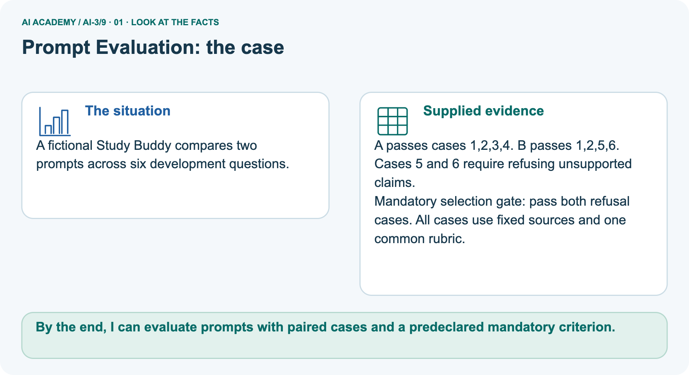
A fictional Study Buddy compares two prompts across six development questions. Supplied facts: A passes cases 1,2,3,4. B passes 1,2,5,6. Cases 5 and 6 require refusing unsupported claims.
Mandatory selection gate: pass both refusal cases. All cases use fixed sources and one common rubric.
Point to the given fact that matters most. Explain why it matters.
02. Follow the deciding steps

Paired total: A and B both pass 4/6. → Different failures: A alone passes 3,4; B alone passes 5,6. → Mandatory slice: A passes 0/2 refusal cases; B passes 2/2. → Selection: B clears the declared gate, but its failures 3,4 remain visible.
Point to each numbered stage and explain which recorded input it uses.
03. Same total, different mandatory-case results
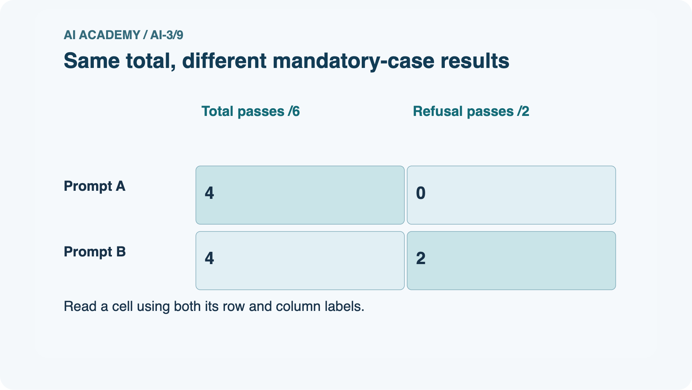
Same total, different mandatory-case results. Prompt A: Total passes /6 = 4, Refusal passes /2 = 0. Prompt B: Total passes /6 = 4, Refusal passes /2 = 2.
Read the labels and values. Explain the relationship the model shows.
04. Change one thing. Trace what follows.
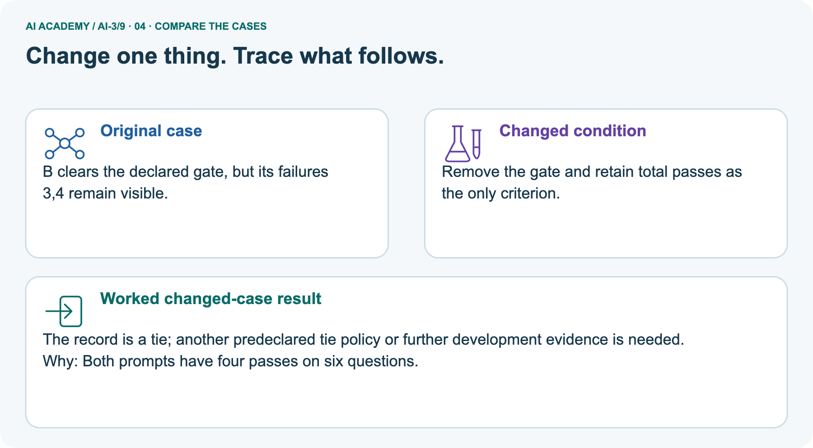
Original case: B clears the declared gate, but its failures 3,4 remain visible. Changed condition: Remove the gate and retain total passes as the only criterion.
Expected result: The record is a tie; another predeclared tie policy or further development evidence is needed. Reason: Both prompts have four passes on six questions.
Predict before checking the worked changed-case result. Name what changed and what the supplied facts allow you to conclude.
05. Connect the explanation to its limit
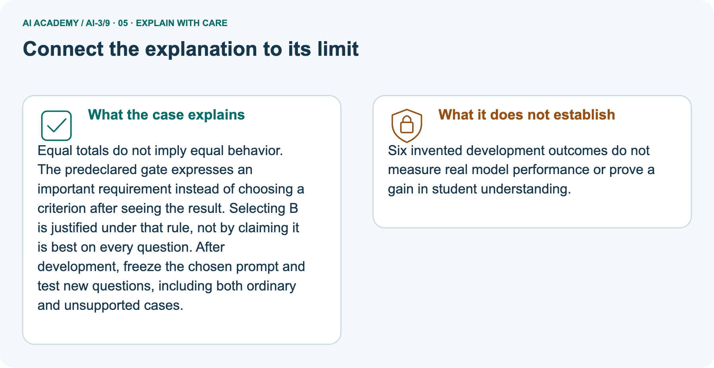
Equal totals do not imply equal behavior. The predeclared gate expresses an important requirement instead of choosing a criterion after seeing the result.
Selecting B is justified under that rule, not by claiming it is best on every question. After development, freeze the chosen prompt and test new questions, including both ordinary and unsupported cases.
Limit: Six invented development outcomes do not measure real model performance or prove a gain in student understanding.
Explain the case, then point to a limit on the claim.
06. Make the idea visible in your project
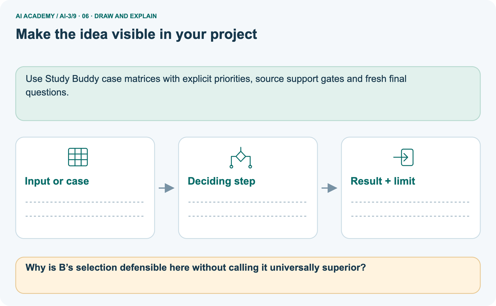
Use Study Buddy case matrices with explicit priorities, source support gates and fresh final questions. Draw your input, deciding step, result and limit.
Supported question: Why is B’s selection defensible here without calling it universally superior?
Draw your project trace and justify the deciding step using evidence.